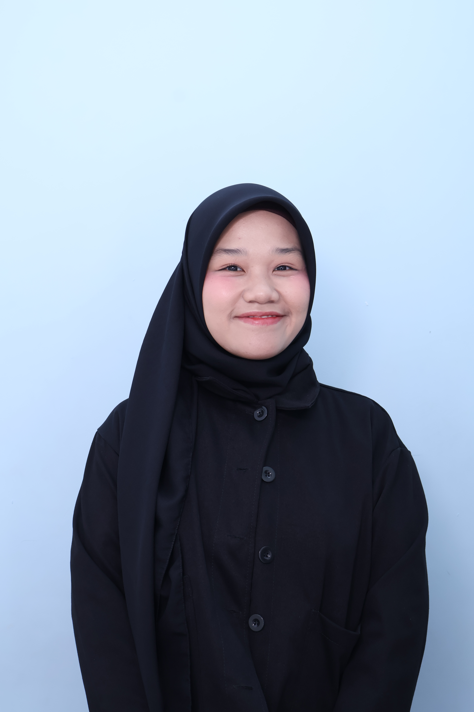

Programming & tools
SPSS
Python
RStudio
Google Colab
Microsoft Excel

Canva
Figma
css
SQL
STATISTICS STUDENT · DATA ENTHUSIAST
I turn data into meaningful insights through statistics, thoughtful analysis, and a little curiosity.

STATISTICS
✳DATA ANALYSIS
✳MACHINE LEARNING
✳RESEARCH
I'm a Statistics undergraduate student at Universitas Padjadjaran, interested in using data to understand real-world problems and support better decisions.
My interests include statistical analysis, predictive modeling, machine learning, and data visualization. I enjoy learning new methods, working with data, and communicating findings in a clear and useful way.
Beyond academics, I have developed leadership, teamwork, and project coordination skills through student organizations and collaborative projects.
More about my experience ↗A growing set of tools and methods I use to explore, model, and communicate data.
SPSS
Python
RStudio
Google Colab
Microsoft Excel
Canva
Figma
css
SQL
This list reflects tools and skills I have worked with and continue to develop.
A selection of academic and personal work. More projects will be added as I keep learning.
Exploring classification and prediction approaches for Human Development Index (HDI), including Support Vector Machine, Support Vector Regression, and Neural Network models.
View project ↗Compared ten time series forecasting methods to analyze monthly rainfall patterns in Bandung City using data from 2022 to 2024. The study evaluates Naive, Simple Average, Moving Average, Exponential Smoothing, Brown, Holt, Holt-Winters, ARRSES, and Decomposition methods to identify the most suitable approach for rainfall forecasting.
View project ↗Analyzed the effects of government expenditure, inflation, population, and current account balance on economic growth across the world's 10 most populous countries from 2014 to 2023. Using Panel Data Regression Analysis, this study examines the relationship between key macroeconomic factors and economic growth across countries over time.
View project ↗Research and academic writing that have shaped the way I think about data and real-world challenges.
Humairoh, S.; Afiyah, N.N.; Faidah, D.Y. · Prosiding Seminar Nasional Statistika, Vol. 12, pp. 136–145.
Analyzed factors influencing e-commerce customers’ purchasing decisions using Binary Logistic Regression. The model identified key predictors, including Page Values, Exit Rates, and Product Related Duration, and achieved an AUC of 0.9563 with 92.0% accuracy using an optimized classification threshold.
View Paper ↗Classified Indonesian provinces based on health system resilience using Agglomerative Hierarchical Clustering (AHC). Compared five linkage methods and identified Ward linkage as the best-performing method, achieving a silhouette score of 0.6355 across three clusters. The findings highlight regional disparities in healthcare resilience across Indonesia.
View Paper ↗Compared several time series forecasting methods to analyze monthly atmospheric CO₂ concentrations from the Mauna Loa Observatory. Holt-Winters achieved the best performance, with the lowest MAPE (0.0014), MAD (0.6036), and MSE (0.5803), by capturing both trend and seasonal patterns in the data.
View Paper ↗Compared Grey (1,1) and Grey-Markov models to forecast monthly rice production in West Java Province for January 2026 using 2025 data from BPS. The results show that Grey-Markov provides more accurate forecasts by capturing data fluctuations, while Grey (1,1) mainly captures the overall trend. This study highlights the potential of forecasting methods to support food security planning and SDG 2: Zero Hunger.
View Paper ↗Experiences that have shaped my professional skills, leadership, and ability to work with others.
Universitas Padjadjaran
Assisted students during practical sessions by explaining multivariate statistical concepts and guiding them through statistical analysis using RStudio.
Dr. Hasan Sadikin General Hospital (RSHS)
Conducted face-to-face interviews with hospital patients to collect research data and ensure accurate questionnaire responses.
Jatinangor Research Center
Maintained administrative databases, organized financial records, and coordinated documentation and communication between divisions.
Badan Eksekutif Himasta FMIPA, Universitas Padjadjaran
Led and supervised 11 staff members in managing six academic development programs, including RASIO, PESTA, PKTI, E-Library, Kompas Akademik, and Tutorial. Coordinated program planning, implementation, and evaluation.
Developed an introductory PKM mentoring program that generated over 30 student proposals, more than double the initial target of 15. Also contributed to RASIO's promotional strategy, collected and shared 200+ competition announcements, and expanded PESTA's training activities from three to four events.
Statistics Day
Oversaw the planning and execution of RASIO 10.0, a statistics competition for high school students nationwide and university students across Southeast Asia. Provided strategic direction and coordinated progress across divisions with the Project Officer.
Contributed to reaching 316 participants, exceeding the initial target, and supported preparations for Seminar Nasional Statistika XIV.
Badan Eksekutif Himpunan Mahasiswa Statistika FMIPA, Universitas Padjadjaran
Managed the planning and execution of two large-scale PESTA academic programs as Person in Charge, overseeing timelines, team coordination, speaker communication, and event evaluation.
Recognized as Best Staff at the organization's Achievement Award 3.0 for outstanding performance and commitment.
Webinar Nasional Fokasi
Conducted media partnership outreach by communicating with external organizations and managing promotional broadcasts to support event publicity and audience engagement.
Statistics Day
Managed external partnership outreach by contacting potential sponsors, distributing collaboration proposals, and maintaining communication with external parties. Also served as PIC for Blazture tenant management, overseeing registration, coordination, and on-site readiness.
Studi Pengenalan Lingkungan
Coordinated team operations, managed medical supplies and emergency preparedness, and responded to participants' health concerns during the student orientation program. Collaborated with other divisions to support a safe event environment.
Essay Competition – Dokter Data, Diponegoro University
HAVE A PROJECT, OPPORTUNITY, OR JUST WANT TO CONNECT?
I'm always happy to connect, exchange ideas, and explore opportunities to learn and contribute.